Thư viện hình minh hoạ
Toàn bộ 17 hình của giáo trình. Trừ Hình 1 dùng số liệu đã công bố của Horowitz (ISSCC 2014), mọi hình còn lại đều do mã nguồn sinh ra, chạy thật và chạy lại được. Xem mã nguồn sinh hình. Bấm vào ảnh để phóng to.
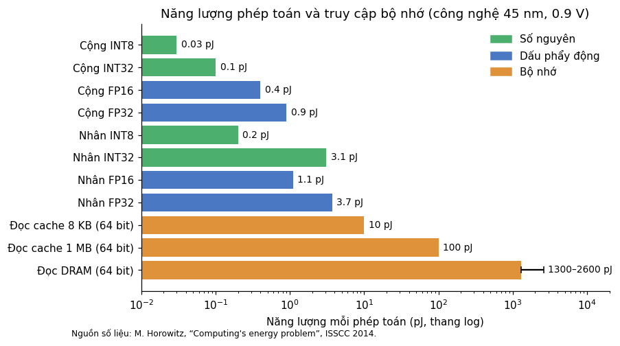
Hình 1
Năng lượng một phép toán và một lần truy cập bộ nhớ ở công nghệ 45 nm (Horowitz, 2014). Trục hoành là thang log.
Chương 1 · Vì sao cần quantization →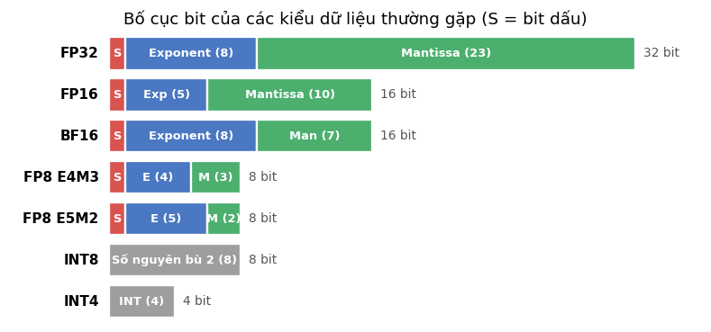
Hình 2
Bố cục bit. Màu đỏ là bit dấu, xanh dương là exponent, xanh lá là mantissa, xám là số nguyên.
Chương 2 · Máy tính biểu diễn số →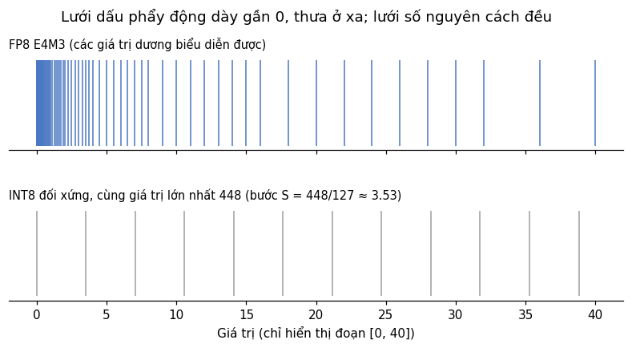
Hình 3
Các giá trị dương biểu diễn được trên đoạn : FP8 E4M3 (trên) và INT8 đối xứng có cùng giá trị lớn nhất 448 (dưới).
Chương 2 · Máy tính biểu diễn số →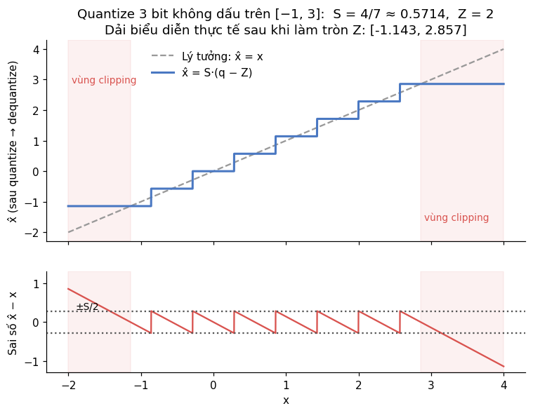
Hình 4
Trên: hàm fake quantization là một hàm bậc thang. Dưới: sai số có dạng răng cưa trong khoảng bên trong dải và tăng tuyến tính bên ngoài dải (vùng clipping).
Chương 3 · Uniform affine quantization →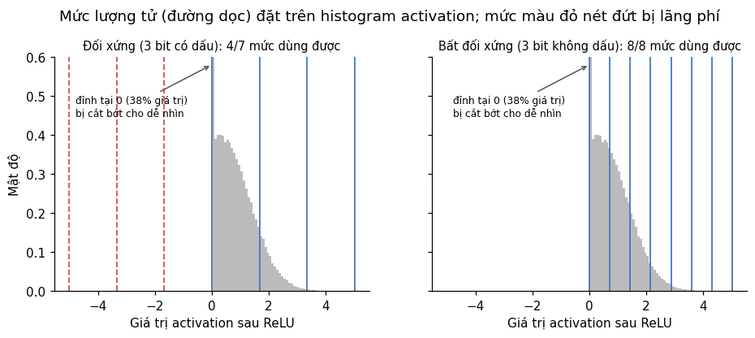
Hình 5
Lượng tử 3 bit cho activation sau ReLU. Lưới đối xứng lãng phí 3/7 mức cho vùng âm không bao giờ xuất hiện.
Chương 3 · Uniform affine quantization →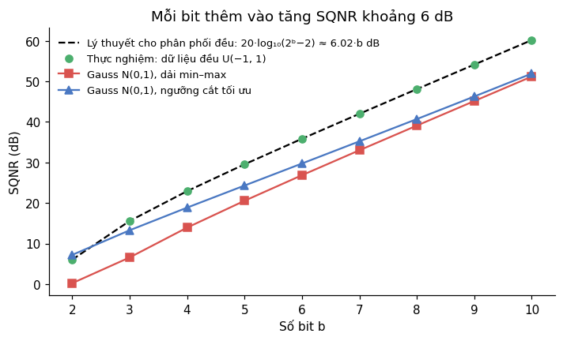
Hình 6
SQNR theo số bit. Dữ liệu đều khớp chính xác với lý thuyết. Dữ liệu Gauss thấp hơn khoảng 9 dB nếu dùng dải min–max, và cải thiện được nếu chọn ngưỡng cắt tối ưu.
Chương 4 · Phân tích sai số →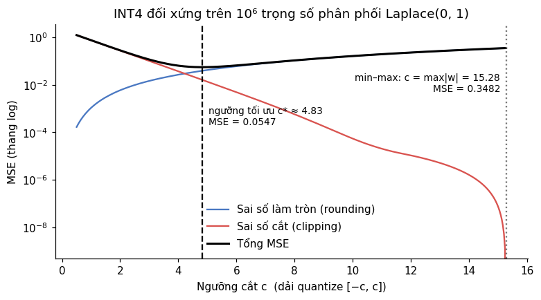
Hình 7
INT4 đối xứng trên trọng số phân phối Laplace. Ngưỡng tối ưu cho MSE . Dùng min–max () cho MSE , lớn gấp 6,4 lần.
Chương 4 · Phân tích sai số →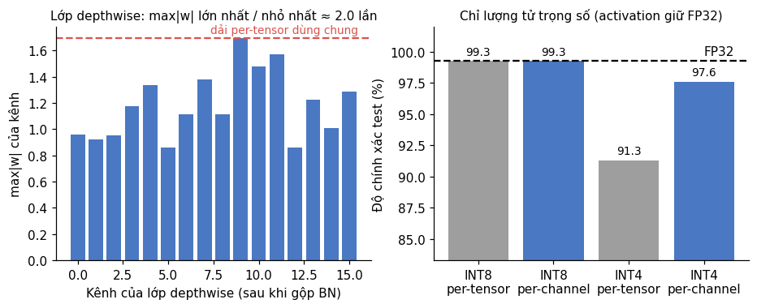
Hình 8
Trái: max|w| của từng kênh trong lớp depthwise. Phải: độ chính xác khi chỉ lượng tử trọng số.
Chương 5 · Độ mịn (granularity) →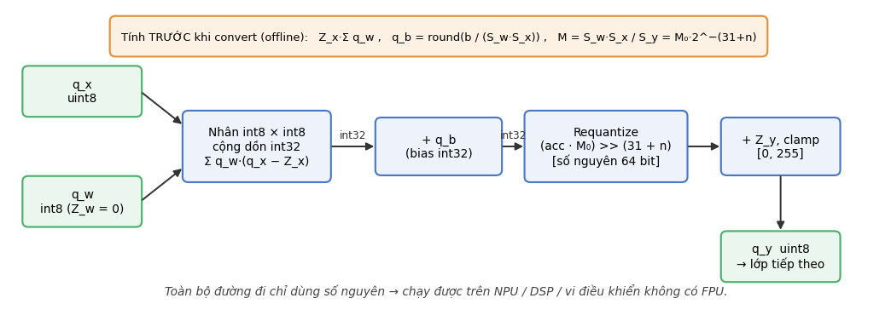
Hình 9
Luồng dữ liệu của một lớp Linear/Conv chạy hoàn toàn bằng số nguyên. Hộp màu cam là các đại lượng tính trước khi triển khai.
Chương 6 · Suy luận bằng số nguyên →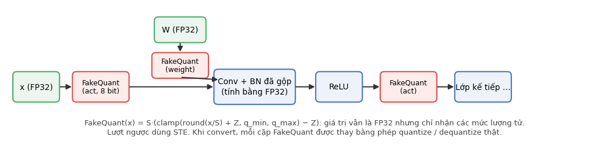
Hình 10
Đồ thị có nút fake-quant. Mọi phép toán vẫn chạy bằng FP32, nhưng các tensor chỉ nhận giá trị trên lưới lượng tử.
Chương 7 · Lượng tử cả một mạng →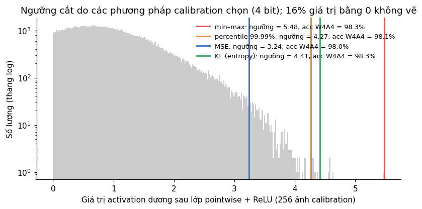
Hình 11
Histogram activation sau lớp pointwise + ReLU và ngưỡng do từng phương pháp chọn.
Chương 8 · Calibration →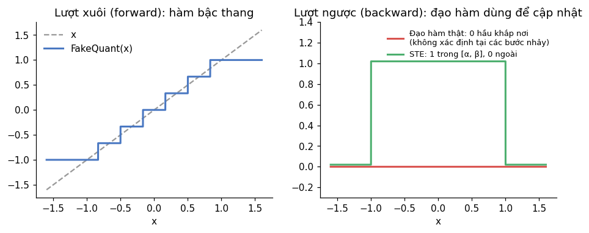
Hình 12
Lượt xuôi dùng hàm bậc thang thật; lượt ngược dùng đạo hàm "giả" của STE.
Chương 9 · PTQ và QAT →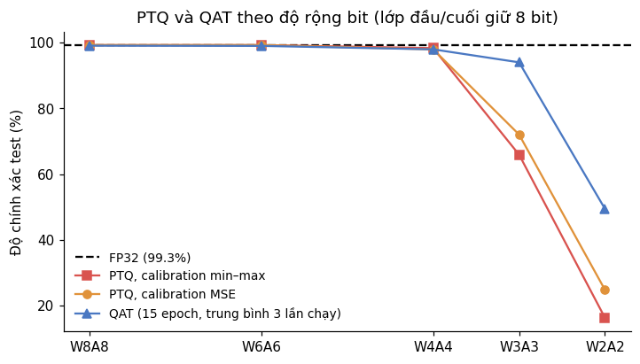
Hình 13
Độ chính xác test theo độ rộng bit.
Chương 9 · PTQ và QAT →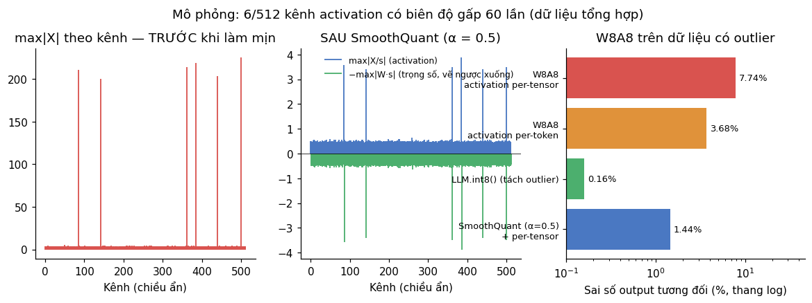
Hình 14
Trái: biên độ activation theo kênh. Giữa: sau SmoothQuant với , biên độ của activation (vẽ lên trên) và trọng số (vẽ xuống dưới) cân bằng nhau. Phải: sai số đầu ra của các cách lượng tử W8A8.
Chương 11 · Quantization cho LLM →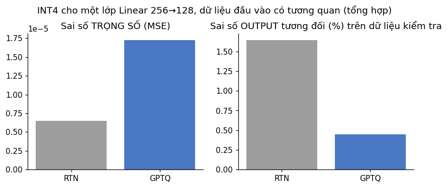
Hình 15
INT4 cho một lớp Linear 256→128 với dữ liệu đầu vào có tương quan (tổng hợp), scale theo hàng giống nhau cho cả hai cách.
Chương 11 · Quantization cho LLM →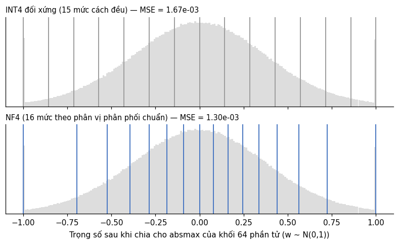
Hình 16
Trọng số chuẩn hóa theo khối và 16 mức lượng tử của INT4 (trên) và NF4 (dưới). NF4 dồn mức vào vùng dày dữ liệu. Trên dữ liệu này, MSE của NF4 là , của INT4 là (NF4 tốt hơn 1,29 lần).
Chương 11 · Quantization cho LLM →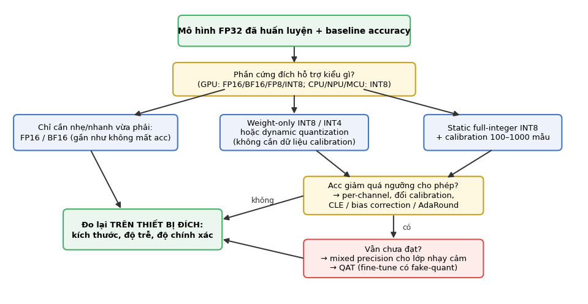
Hình 17
Quy trình chọn và tinh chỉnh phương pháp lượng tử.
Chương 12 · Quy trình làm việc →